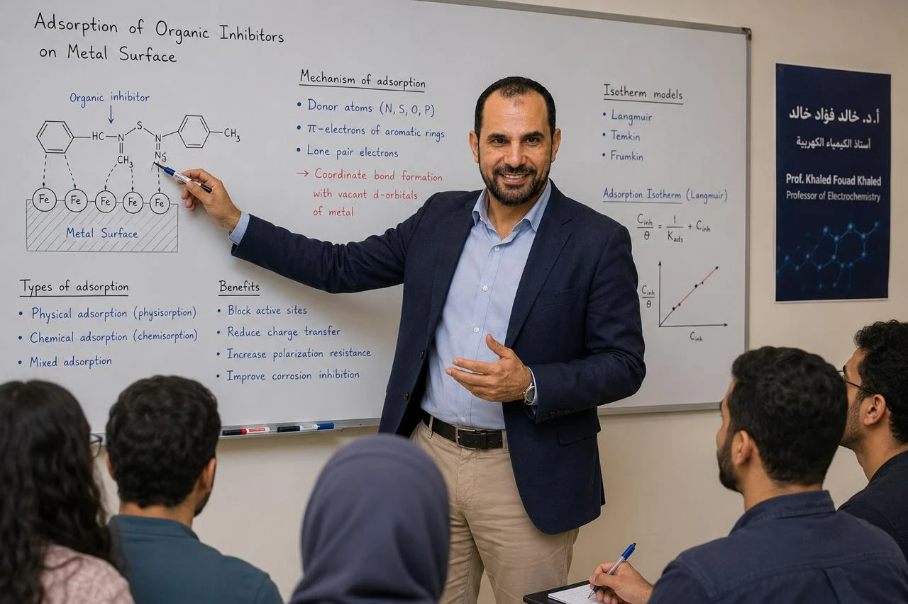
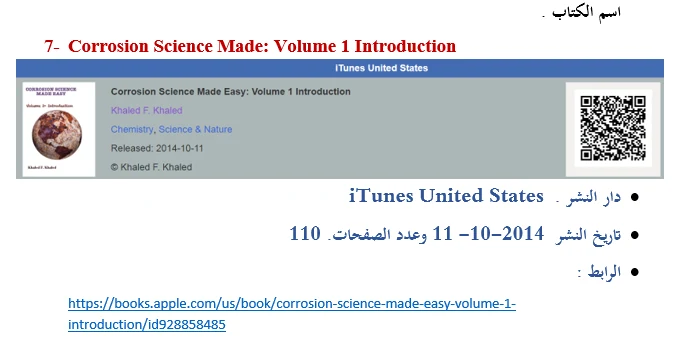
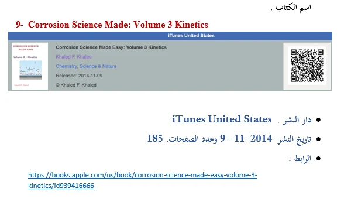
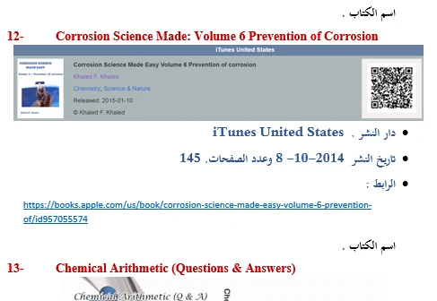
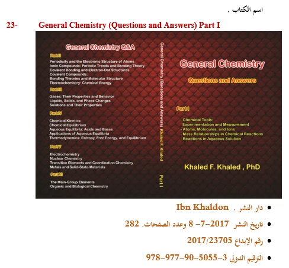
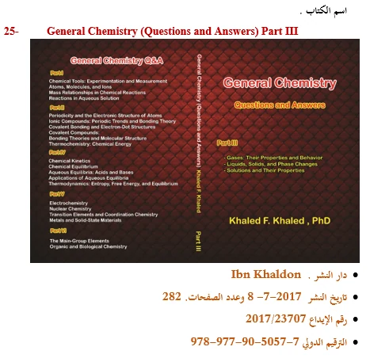
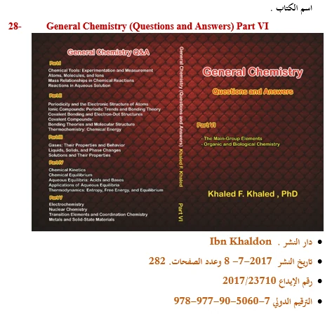
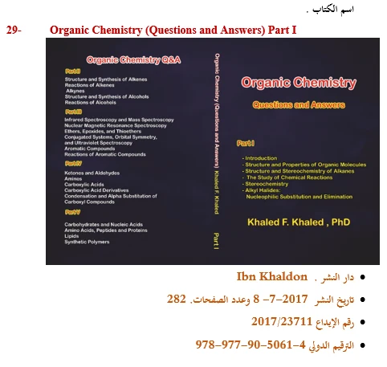
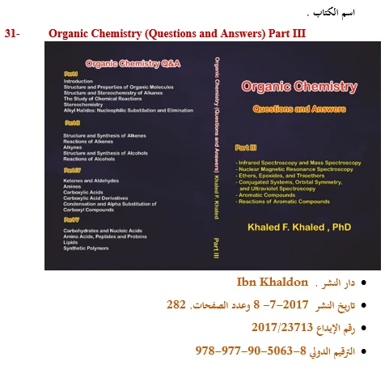
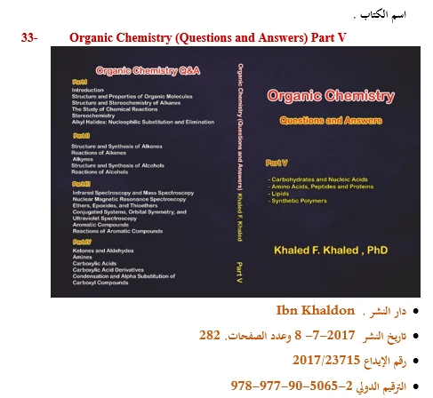

Scientific Authorship and Knowledge Disseminationالتأليف العلمي ونشر المعرفة
Books & Scholarly Publicationsالكتب والمؤلفات العلمية
A documented record of interactive digital books and printed chemistry question banks that connects research expertise, university teaching and international knowledge dissemination.سجل موثق لكتب رقمية تفاعلية ومؤلفات مطبوعة وبنوك أسئلة في الكيمياء، يجمع بين الخبرة البحثية والتعليم الجامعي ونشر المعرفة على نطاق دولي.

Authorship Overviewمقدمة عن التأليف العلمي
Scientific knowledge transformed into accessible learning resourcesتحويل المعرفة العلمية إلى مصادر تعليمية واضحة وقابلة للاستخدام
The books and scholarly works authored by Prof. Dr. Khaled Fouad Khaled represent an extension of his contributions to scientific research, university education and the dissemination of chemical knowledge through both conventional and digital media. His publications combine scientific accuracy, structured presentation, practical application and the effective use of modern educational technologies.تمثل مؤلفات الأستاذ الدكتور خالد فؤاد خالد امتدادًا لمسيرته في البحث العلمي والتعليم الجامعي ونشر المعرفة الكيميائية باستخدام الوسائط التقليدية والرقمية. وقد اتجه في مؤلفاته إلى الجمع بين الدقة العلمية، والتدرج المنهجي، والتطبيقات العملية، وتوظيف التكنولوجيا الحديثة في تقديم المحتوى الأكاديمي للطلاب والباحثين والمهتمين بعلوم الكيمياء.
A significant dimension of this work involved the development of interactive electronic books covering several branches of chemistry and their international distribution through Apple’s digital publishing platform. This initiative was followed by an extensive collection of printed question-and-answer books addressing general, organic, electrochemical, nuclear and physical chemistry, chemical kinetics, thermodynamics, material properties, transition elements and corrosion science.بدأ هذا الاتجاه بصورة بارزة من خلال تأليف مجموعة من الكتب الإلكترونية التفاعلية في عدد من فروع الكيمياء، ونشرها عبر منصة Apple باستخدام تقنيات الكتاب الرقمي الحي، بما أتاح الوصول إليها من دول مختلفة. كما توسع مشروعه في التأليف ليشمل مجموعة من الكتب المطبوعة التي تتضمن بنوكًا منظمة من الأسئلة والإجابات، وتغطي موضوعات الكيمياء العامة والعضوية والكهربية والنووية والحركية والديناميكا الحرارية وخواص المادة والعناصر الانتقالية وعلوم التآكل.
Collectively, these publications seek to transform specialized scientific knowledge into accessible learning resources that support conceptual understanding, problem-solving, self-assessment and independent learning. They also contribute to the academic preparation of students and researchers and extend access to chemistry education within Egypt and internationally.وتعكس هذه المؤلفات توجهًا نحو تحويل المعرفة العلمية المتخصصة إلى مصادر تعليمية واضحة وقابلة للاستخدام، تجمع بين الشرح الأكاديمي، والتدريب على حل المشكلات، والتقويم الذاتي، والاستفادة من الوسائط الرقمية. كما تدعم هذه الكتب بناء قدرات الطلاب والباحثين، وتسهم في إتاحة المعرفة الكيميائية لجمهور أوسع داخل مصر وخارجها.
The titles, publication dates, page counts, deposit numbers and ISBN information presented on this page are based on the documented records included in the scientific publications portfolio.تعتمد بيانات الكتب وتواريخ النشر وأعداد الصفحات وأرقام الإيداع والترقيم الدولي الواردة في هذه الصفحة على الوثائق المرفقة في ملف المؤلفات العلمية.
Multi-volume Collectionsالسلاسل العلمية متعددة الأجزاء
Three structured series for progressive chemistry learningثلاث سلاسل منظمة للتعلم المتدرج في الكيمياء
The documented portfolio includes a digital corrosion-science sequence and printed multi-part collections in general and organic chemistry.يتضمن ملف المؤلفات سلسلة رقمية في علوم التآكل ومجموعات مطبوعة متعددة الأجزاء في الكيمياء العامة والعضوية.



6 volumes6 مجلدات
Corrosion Science Made Easy
A progressive introduction to corrosion fundamentals, thermodynamics, kinetics, forms of corrosion and prevention.مدخل متدرج إلى أساسيات التآكل وديناميكيته الحرارية وحركيته وأشكاله وأساليب الوقاية منه.



6 parts6 أجزاء
General Chemistry: Questions and Answers
A six-part printed question-bank series covering a broad sequence of general chemistry concepts.سلسلة مطبوعة من ستة أجزاء تقدم بنوك أسئلة تغطي نطاقًا واسعًا من مفاهيم الكيمياء العامة.



5 parts5 أجزاء
Organic Chemistry: Questions and Answers
A five-part collection designed for revision, self-assessment and applied organic-chemistry problem-solving.مجموعة من خمسة أجزاء للمراجعة والتقويم الذاتي وحل المشكلات التطبيقية في الكيمياء العضوية.
Digital Publishingالنشر الرقمي
Interactive Digital Booksالكتب الإلكترونية التفاعلية
12 documented titles12 عنوانًا موثقًا
Digital Bookكتاب رقمي2014
Chemistry Laboratory Lecture Notes: Inorganic Qualitative Analysis
Laboratory-oriented notes introducing classical inorganic qualitative analysis and systematic identification of ions.مذكرات معملية تقدم أساسيات التحليل النوعي غير العضوي والتعرف المنهجي إلى الأيونات.
Digital Bookكتاب رقمي2014
Chemistry Laboratory Lecture Notes: Volumetric Analysis Lab
A practical digital guide to volumetric analysis, titration principles and laboratory procedures.دليل رقمي عملي للتحليل الحجمي ومبادئ المعايرة وإجراءات العمل المعملي.
Digital Bookكتاب رقمي2014
Electrochemistry Lecture Notes
Structured notes covering core electrochemical concepts, cells, potentials and related applications.مذكرات منظمة تغطي المفاهيم الأساسية في الكيمياء الكهربية والخلايا والجهود وتطبيقاتها.
Digital Bookكتاب رقمي2014
Chemical Kinetics Lecture Notes
An instructional treatment of reaction rates, kinetic laws and factors controlling chemical processes.معالجة تعليمية لمعدلات التفاعل وقوانين الحركية والعوامل المتحكمة في العمليات الكيميائية.
Digital Bookكتاب رقمي2014
Nuclear Chemistry Lecture Notes
Digital notes introducing nuclear transformations, radioactivity and fundamental nuclear chemistry.مذكرات رقمية تقدم التحولات النووية والنشاط الإشعاعي وأساسيات الكيمياء النووية.
Digital Bookكتاب رقمي2015
Funny Chemistry Experiments
An accessible collection of chemistry experiments designed to connect observation with scientific explanation.مجموعة مبسطة من التجارب الكيميائية تربط الملاحظة بالتفسير العلمي.
Digital Bookكتاب رقمي2014Volume 1
Corrosion Science Made Easy: Volume 1 — Introduction
The introductory volume presents the foundations, terminology and practical significance of corrosion science.يقدم المجلد التمهيدي أسس علم التآكل ومصطلحاته وأهميته التطبيقية.
Digital Bookكتاب رقمي2014Volume 2
Corrosion Science Made Easy: Volume 2 — Thermodynamics
Explains the thermodynamic principles governing corrosion reactions and material stability.يشرح المبادئ الديناميكية الحرارية الحاكمة لتفاعلات التآكل واستقرار المواد.
Digital Bookكتاب رقمي2014Volume 3
Corrosion Science Made Easy: Volume 3 — Kinetics
Covers the kinetic interpretation of corrosion rates, electrode processes and controlling mechanisms.يتناول التفسير الحركي لمعدلات التآكل والعمليات الكهربية والآليات المتحكمة.
Digital Bookكتاب رقمي2015Volume 4
Corrosion Science Made Easy: Volume 4 — Forms of Corrosion, Part 1
Introduces major forms of corrosion and connects their characteristics with real material failures.يعرض الأشكال الرئيسة للتآكل ويربط خصائصها بحالات فشل المواد الواقعية.
Digital Bookكتاب رقمي2015Volume 5
Corrosion Science Made Easy: Volume 5 — Forms of Corrosion, Part 2
Continues the study of corrosion forms through additional mechanisms, cases and engineering contexts.يستكمل دراسة أشكال التآكل من خلال آليات وحالات وسياقات هندسية إضافية.
Digital Bookكتاب رقمي2014Volume 6
Corrosion Science Made Easy: Volume 6 — Prevention of Corrosion
Focuses on practical corrosion control, protection strategies and prevention methods.يركز على التحكم العملي في التآكل واستراتيجيات الحماية وأساليب الوقاية.
Printed Learning Resourcesالمصادر التعليمية المطبوعة
Printed Books and Question Banksالكتب المطبوعة وبنوك الأسئلة
21 documented titles21 عنوانًا موثقًا
Printed Question Bankكتاب مطبوع وبنك أسئلة2017
Chemical Arithmetic: Questions and Answers
A problem-based resource for mastering chemical calculations and quantitative reasoning.مرجع تدريبي قائم على المسائل لإتقان الحسابات الكيميائية والاستدلال الكمي.
Printed Question Bankكتاب مطبوع وبنك أسئلة2017
Chemical Kinetics: Questions and Answers
Question-and-answer practice in rate laws, reaction mechanisms and kinetic analysis.تدريبات بأسلوب الأسئلة والإجابات في قوانين السرعة وآليات التفاعل والتحليل الحركي.
Printed Question Bankكتاب مطبوع وبنك أسئلة2017
Electrochemistry: Questions and Answers
A broad bank of electrochemistry questions for revision, assessment and applied problem-solving.بنك واسع من أسئلة الكيمياء الكهربية للمراجعة والتقويم وحل المشكلات التطبيقية.
Printed Question Bankكتاب مطبوع وبنك أسئلة2017
Gases and Their Properties: Questions and Answers
Covers gas laws, molecular behaviour and quantitative applications through guided questions.يغطي قوانين الغازات والسلوك الجزيئي والتطبيقات الكمية من خلال أسئلة موجهة.
Printed Question Bankكتاب مطبوع وبنك أسئلة2017
Liquids, Solids and Phase Changes: Questions and Answers
Practice on intermolecular forces, states of matter, solids and phase transitions.تدريبات على القوى بين الجزيئية وحالات المادة والمواد الصلبة والتحولات الطورية.
Printed Question Bankكتاب مطبوع وبنك أسئلة2017
Metals and Solid-State Materials: Questions and Answers
Questions addressing metallic structure, solid-state materials and their chemical properties.أسئلة تتناول البنية الفلزية ومواد الحالة الصلبة وخواصها الكيميائية.
Printed Question Bankكتاب مطبوع وبنك أسئلة2017
Nuclear Chemistry: Questions and Answers
A structured review of radioactivity, nuclear equations and applications of nuclear chemistry.مراجعة منظمة للنشاط الإشعاعي والمعادلات النووية وتطبيقات الكيمياء النووية.
Printed Question Bankكتاب مطبوع وبنك أسئلة2017
Solutions and Their Properties: Questions and Answers
Extensive practice on solution composition, concentration, colligative properties and related calculations.تدريبات موسعة على تركيب المحاليل والتركيز والخواص الجامعة والحسابات المرتبطة بها.
Printed Question Bankكتاب مطبوع وبنك أسئلة2017
Chemical Thermodynamics: Questions and Answers
Questions and answers covering energy, entropy, spontaneity and chemical equilibrium.أسئلة وإجابات تغطي الطاقة والإنتروبيا والتلقائية والاتزان الكيميائي.
Printed Question Bankكتاب مطبوع وبنك أسئلة2017
Transition Elements and Coordination Chemistry: Questions and Answers
A focused question bank on transition-metal chemistry, complexes and coordination principles.بنك أسئلة متخصص في كيمياء العناصر الانتقالية والمعقدات ومبادئ التناسق.
Printed Question Bankكتاب مطبوع وبنك أسئلة2017Part I
General Chemistry: Questions and Answers — Part I
Part I of a six-volume question-bank series covering fundamental general chemistry topics.الجزء I من سلسلة من ستة أجزاء تغطي موضوعات الكيمياء العامة الأساسية.
Printed Question Bankكتاب مطبوع وبنك أسئلة2017Part II
General Chemistry: Questions and Answers — Part II
Part II of a six-volume question-bank series covering fundamental general chemistry topics.الجزء II من سلسلة من ستة أجزاء تغطي موضوعات الكيمياء العامة الأساسية.
Printed Question Bankكتاب مطبوع وبنك أسئلة2017Part III
General Chemistry: Questions and Answers — Part III
Part III of a six-volume question-bank series covering fundamental general chemistry topics.الجزء III من سلسلة من ستة أجزاء تغطي موضوعات الكيمياء العامة الأساسية.
Printed Question Bankكتاب مطبوع وبنك أسئلة2017Part IV
General Chemistry: Questions and Answers — Part IV
Part IV of a six-volume question-bank series covering fundamental general chemistry topics.الجزء IV من سلسلة من ستة أجزاء تغطي موضوعات الكيمياء العامة الأساسية.
Printed Question Bankكتاب مطبوع وبنك أسئلة2017Part V
General Chemistry: Questions and Answers — Part V
Part V of a six-volume question-bank series covering fundamental general chemistry topics.الجزء V من سلسلة من ستة أجزاء تغطي موضوعات الكيمياء العامة الأساسية.
Printed Question Bankكتاب مطبوع وبنك أسئلة2017Part VI
General Chemistry: Questions and Answers — Part VI
Part VI of a six-volume question-bank series covering fundamental general chemistry topics.الجزء VI من سلسلة من ستة أجزاء تغطي موضوعات الكيمياء العامة الأساسية.
Printed Question Bankكتاب مطبوع وبنك أسئلة2017Part I
Organic Chemistry: Questions and Answers — Part I
Part I of a five-volume series supporting revision and problem-solving in organic chemistry.الجزء I من سلسلة من خمسة أجزاء لدعم المراجعة وحل المشكلات في الكيمياء العضوية.
Printed Question Bankكتاب مطبوع وبنك أسئلة2017Part II
Organic Chemistry: Questions and Answers — Part II
Part II of a five-volume series supporting revision and problem-solving in organic chemistry.الجزء II من سلسلة من خمسة أجزاء لدعم المراجعة وحل المشكلات في الكيمياء العضوية.
Printed Question Bankكتاب مطبوع وبنك أسئلة2017Part III
Organic Chemistry: Questions and Answers — Part III
Part III of a five-volume series supporting revision and problem-solving in organic chemistry.الجزء III من سلسلة من خمسة أجزاء لدعم المراجعة وحل المشكلات في الكيمياء العضوية.
Printed Question Bankكتاب مطبوع وبنك أسئلة2017Part IV
Organic Chemistry: Questions and Answers — Part IV
Part IV of a five-volume series supporting revision and problem-solving in organic chemistry.الجزء IV من سلسلة من خمسة أجزاء لدعم المراجعة وحل المشكلات في الكيمياء العضوية.
Printed Question Bankكتاب مطبوع وبنك أسئلة2017Part V
Organic Chemistry: Questions and Answers — Part V
Part V of a five-volume series supporting revision and problem-solving in organic chemistry.الجزء V من سلسلة من خمسة أجزاء لدعم المراجعة وحل المشكلات في الكيمياء العضوية.
No books match the current search and filter.لا توجد كتب مطابقة للبحث والتصنيف الحاليين.
Scientific Fields Coveredالمجالات العلمية التي تغطيها المؤلفات
A wide disciplinary spectrum across chemistryنطاق علمي واسع عبر فروع الكيمياء
Educational and Scientific Impactالأثر التعليمي والعلمي للمؤلفات
Research-informed resources for learning, practice and international accessمصادر مستندة إلى الخبرة البحثية للتعلم والتدريب والإتاحة الدولية
These publications extend chemistry education beyond the classroom through digital access, structured self-assessment and the integration of research, laboratory practice and teaching.توسع هذه المؤلفات نطاق تعليم الكيمياء خارج القاعة الدراسية عبر الإتاحة الرقمية والتقويم الذاتي المنظم والتكامل بين البحث والممارسة المعملية والتدريس.
Digital Knowledge Disseminationنشر المعرفة رقميًا
Interactive titles distributed through an international digital platform.عناوين تفاعلية أتيحت من خلال منصة رقمية دولية.
Self-Assessment and Independent Learningالتقويم الذاتي والتعلم المستقل
Question banks support revision, practice and examination preparation.تدعم بنوك الأسئلة المراجعة والتدريب والاستعداد للاختبارات.
Multiple Chemistry Disciplinesتغطية فروع متنوعة من الكيمياء
The collection ranges from analytical and physical chemistry to organic chemistry and corrosion science.تمتد المجموعة من الكيمياء التحليلية والفيزيائية إلى الكيمياء العضوية وعلوم التآكل.
Integration of Research and Teachingالتكامل بين البحث العلمي والتدريس
Specialist research experience is translated into structured educational content.تتحول الخبرة البحثية المتخصصة إلى محتوى تعليمي منظم.
Books and Researchالكتب والبحث العلمي
A direct bridge between specialist research and university learningجسر مباشر بين البحث المتخصص والتعلم الجامعي
Several works are closely connected to the author’s research in electrochemistry and corrosion science, particularly Electrochemistry Lecture Notes and the Corrosion Science Made Easy series. These titles translate scientific principles and applied experience into structured learning resources.استند جانب من المؤلفات إلى الخبرة البحثية المتخصصة في الكيمياء الكهربية وتآكل المعادن، ويظهر ذلك بوضوح في كتاب Electrochemistry Lecture Notes وسلسلة Corrosion Science Made Easy، حيث تتحول المبادئ العلمية والخبرة التطبيقية إلى مصادر تعليمية منظمة.
- Specialist research in electrochemistry, molecular modelling and corrosion scienceبحث متخصص في الكيمياء الكهربية والنمذجة الجزيئية وعلوم التآكل
- Transformation of expertise into lecture notes, digital books and question banksتحويل الخبرة إلى مذكرات وكتب رقمية وبنوك أسئلة
- Support for conceptual learning, problem-solving and independent revisionدعم الفهم المفاهيمي وحل المشكلات والمراجعة المستقلة
- International dissemination through digital and printed publishingنشر دولي من خلال التأليف الرقمي والمطبوع